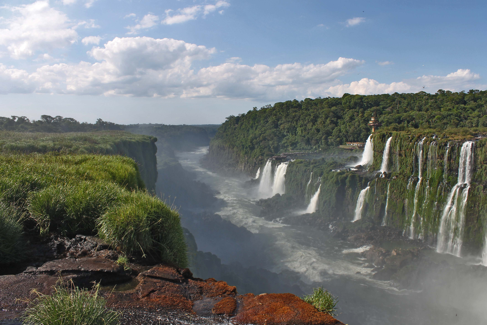
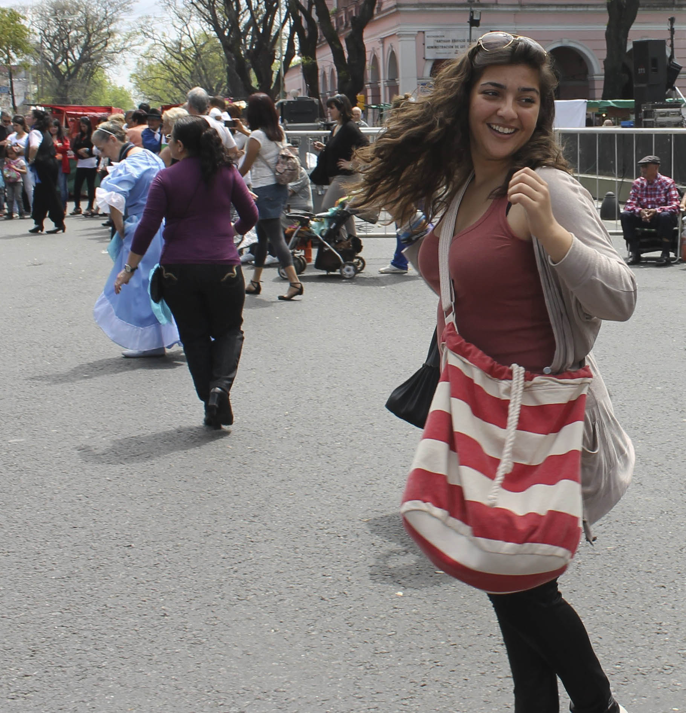
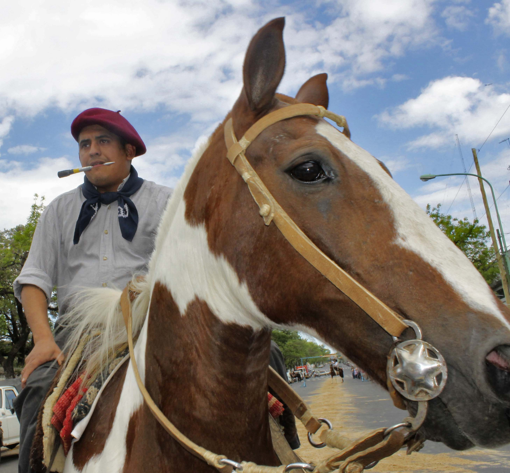
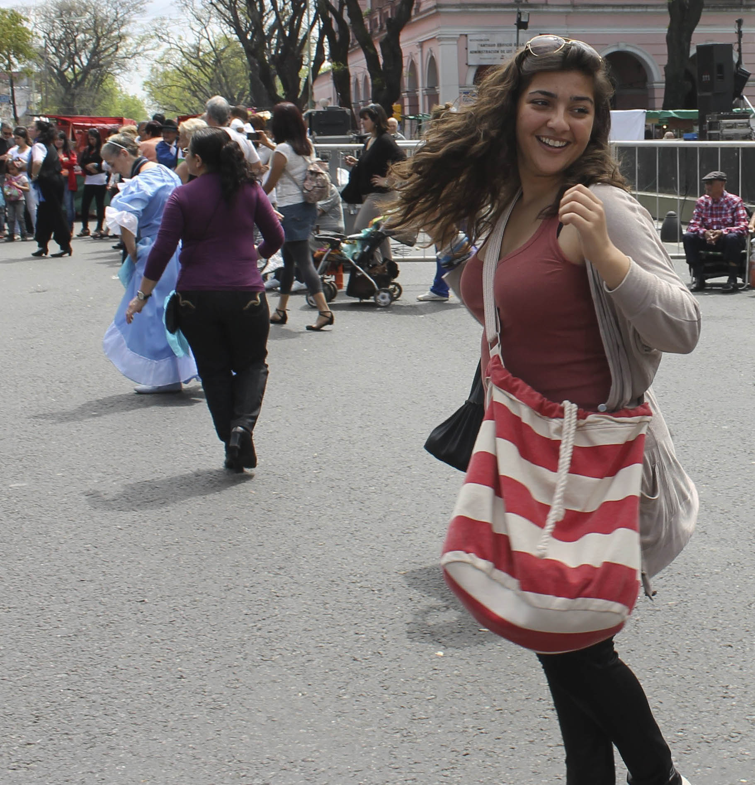
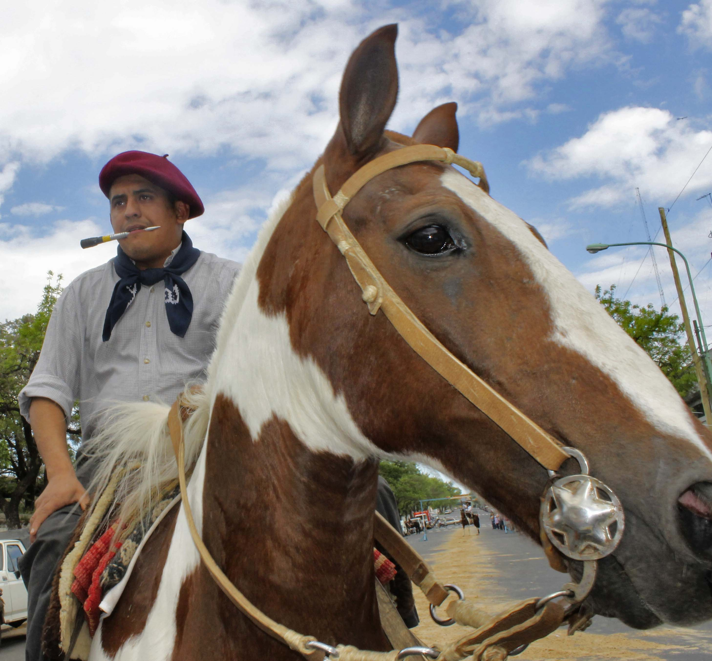

Back
Argentina
Argentina was my first term at TGS. I was fourteen years old and quite unexperienced when it came to almost anything and everything that had to do with being a traveler. Prior to this, I've been to a few places with family and friends but it was incomparable to what I have accomplished thus far. As I am sitting at La Ménagère, a cafe in Florence, finally doing my digital portfolio that I have put off for four years, it's about time that I reflect on over forty-five months of a pretty stressful and unique nomadic lifestyle. So, buckle up, grab a snack, a cup of coffee, tea or anything that would enjoy because ladies and gents... I am about to take on a trip down memory lane.
August 31st, 2012 - Casablanca, Morocco.
After a four hour drive, I reached the airport. Anxiety surged my body and faded in seconds. My time with the family was half-finished and the check-in desk was about to close. There was no turning back, I had to check-in, literally.
As my mother kept questioning my 'rational' decision, I swallowed my tears, pride, and anxiety, and handed my passport to the service agent with a smile; a smile that created a veil in which I enveloped my thoughts and emotions. A week prior to my departure, I began to pack my life into a 25kg suitcase, hand picking every single item with much care and excitement. Nonetheless, as nings rolled one after the other, I witnessed my excitement translate into an increasing apprehension.
For a brief moment, refracted through the never-ending airport departure procedures, I reminisced about all the good things I left behind; thinking that if it wasn’t for this lifetime opportunity, I may have been tempted to crawl underneath the security barriers and run back to my car.
Thirteen hours and forty minutes later, I landed in Buenos Aires. It was my first time in South America and my knowledge about the country was limited to soccer legends: Maradona and Messi. I was picked up by my ‘new guardians’ and driven to the place I called home for the following four months.
IQ Callao Jose Andres Pacheco de Melo 1857, 1126 Buenos Aires, Argentina.
With big smiles and open arms, I was welcomed into an exceptionally loving community. I don't think I've ever hugged or been hugged by so many strangers in one day, (as a newbie, I was pretty weirded out by that, I was just like: alright I guess we're hugging now, what's your name again?) Unexpectedly I familiarized myself with the TGS culture quite rapidly, and their traditions became mine.
Argentina witnessed my growth as a student, traveler, artist, photographer, and most importantly as a human. As I traveled around the country and across the water to Uruguay, I fell in love with the history and the vibrant art culture. Dance, poetry, soccer, and literature, each of these elements portrayed the uniqueness of the Argentinians. Towards the end of my stay in South America, I had developed a deep connection that I carried with me to a few weeks later to Asia.

 


